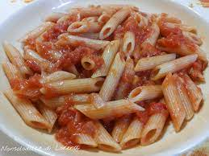

Penne al pomodoro
Ingredienti
Di seguito riportiamo gli ingredienti per preparare il nostro piatto
- Penne 500 gr
- Pomodori 800 gr
- Olio extravergine di oliva 2 cucchiai
- Aglio a spicchi
- Erbe aromatiche
Preparazione
- Mettere sul fuoco una pentola contenente acqua
- Soffriggere aglio ed erbe aromatiche
- Cucinare la pasta e scolarla
- Saltare la pasta con l'aglio e le erbe
- Servire